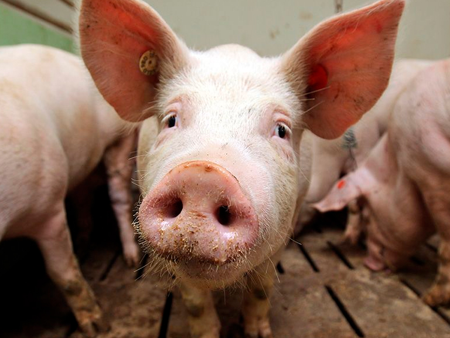

Los científicos de la Universidad de Yale en New Haven, Connecticut, han revivido los cerebros incorpóreos de cerdos cuatro horas después de la muerte . Aunque el equipo no logró restaurar la conciencia, los bioeticistas dicen que su enfoque tiene profundas implicaciones éticas .
El equipo de noticias de Nature responde algunas de sus preguntas sobre la investigación 1 y hacia dónde podría conducir.
¿Podría esta investigación conducir a la inmortalidad? – Wesley Mendes
No es agradable. El sistema Brain Ex desarrollado por los investigadores de Yale suministró células con oxígeno y nutrientes. Este soporte restauró algunas funciones celulares, como metabolizar los azúcares para obtener energía y producir proteínas, hasta por 36 horas. Pero el sistema no puede retardar el envejecimiento o la enfermedad, y los investigadores no saben cuánto tiempo Brain Ex puede mantener los órganos vivos.
El equipo no ha probado la tecnología en humanos, sobre todo porque Brain Ex es difícil de usar sin extraer el cerebro del cráneo. Pero un mayor desarrollo del sistema podría ofrecer algún día la esperanza de revivir a las personas después de la muerte cerebral causada por un accidente, un ataque cardíaco o un derrame cerebral.
¿Qué significa esto para el trasplante de cerebro? Anónimo
Trasplantar un cerebro de un cuerpo a otro es aún más cercano al ámbito de la ciencia ficción que a los hechos.
Los investigadores en el estudio cerebro-cerdo restauraron algunas funciones de las células dentro de los órganos. Pero conectar un cerebro trasplantado a un cuerpo vivo sería un esfuerzo mucho más complejo. Uno de los mayores desafíos para los científicos sería determinar cómo volver a conectar el tallo del cerebro a la médula espinal cortada del cuerpo. Hacer esa conexión le permitiría al cerebro enviar señales eléctricas a través de la columna vertebral para dirigir la función y el movimiento del cuerpo, y responder a las entradas sensoriales de otras partes del cuerpo.
¿Podría ser consciente un cerebro sin cuerpo? ¿Podía percibir o sentir cosas? – Albert J.
No lo sabemos En este estudio, los investigadores impidieron deliberadamente que los cerebros de los cerdos recuperaran la conciencia, mediante el uso de productos químicos para bloquear el disparo de las neuronas. El equipo nunca vio ninguna actividad de todo el cerebro que indicara que los órganos podrían estar conscientes.
Pero la idea de que un cerebro sin cuerpo podría recuperar la conciencia no es imposible. En el estudio del cerebro de cerdos, los investigadores extrajeron trozos de tejido cerebral y les aplicaron un estímulo eléctrico. Descubrieron que las neuronas todavía tenían la capacidad de disparar en respuesta a ese indicador externo. Y el año pasado, investigadores de la Universidad de California, San Diego, informaron que los ‘mini cerebros cultivados en un plato habían producido espontáneamente ondas cerebrales similares a las de los humanos por primera vez. Los patrones eléctricos producidos por estos organoides cerebrales (agrupaciones 3D de tejido cerebral cultivadas en el laboratorio) parecían similares a las observadas en bebés prematuros 2 .
Saber si un cerebro sin cuerpo podría percibir algo de su entorno requeriría conectarlo a órganos sensoriales como los ojos o la piel. Pero los experimentos con tanques de privación sensorial (y la investigación de nuestra capacidad para soñar) sugieren que los cerebros pueden ser conscientes incluso sin la percepción de estímulos externos 3 .
¿Podría la investigación como el estudio del cerebro de cerdo cambiar la forma en que definimos la conciencia? – Ego Sum
La tecnología como el sistema Brain Ex que se usa para apoyar a los cerebros de los cerdos podría proporcionar una nueva forma de modelar la conciencia y la actividad cerebral en el laboratorio, e incluso permitir que los científicos prueben los fármacos para detectar trastornos neurológicos en órganos de animales sin cuerpo en lugar de en personas.
Los experimentos de cerebro de cerdo tuvieron lugar en los Estados Unidos, que no regulan los experimentos en los órganos de un animal después de que se retiran de su cuerpo. Pero los investigadores dicen que cualquier experimento que pueda restaurar la actividad cerebral en un órgano sin cuerpo debe realizarse solo después de una revisión ética.
¿La actividad cerebral mínima observada en el experimento con cerdos constituye un estado vegetativo? Anónimo
No. Aunque una persona en estado vegetativo no se considera consciente, las neuronas en su cerebro todavía están activadas y son capaces de regular los ciclos de sueño-vigilia y la función cardíaca y pulmonar, entre otros procesos. Los cerebros de los cerdos en el último estudio llevaron a cabo funciones metabólicas, como las que usan las células para producir energía y eliminar los desechos, pero sus neuronas no se activaron a menos que los investigadores las estimulen individualmente.
¿Un cerebro posiblemente consciente y aislado tendría derechos humanos? ¿Puede un cerebro inconsciente sin cuerpo todavía ser considerado humano? – T. Beyer
Hay pocas leyes que gobiernan la creación de la conciencia en un órgano, y los especialistas en ética están comenzando a lidiar con este problema en serio .
Sin embargo, el experimento cerebro-cerdo no es el primero en plantear preguntas sobre qué entidades son conscientes y qué derechos se merecen. Los eticistas ya están debatiendo si las máquinas artificialmente inteligentes merecen derechos, y si la inteligencia de animales como los chimpancés y los delfines hace que estos animales sean dignos de mayores derechos.
¿Qué significa esto para la posibilidad de crionics? – David Quintero
No sabemos si el estudio con cerdos tiene implicaciones para la criónica: la congelación de un cuerpo o cerebro después de la muerte con la esperanza de un avivamiento en el futuro. Los cerebros de los cerdos murieron durante cuatro horas antes de que los investigadores los infundieran con la solución Brain Ex que restauraba algunas funciones celulares. Nadie ha probado si el sistema funcionaría en cerebros congelados.
Archivo: publicado originalmente el 23 de mayo de 2019 en el sitio anterior de la Sociedad (https://socneurociencia.cl/2019/05/23/celulas-nerviosas-del-cerdo-revividas-tus-preguntas-respondidas/).